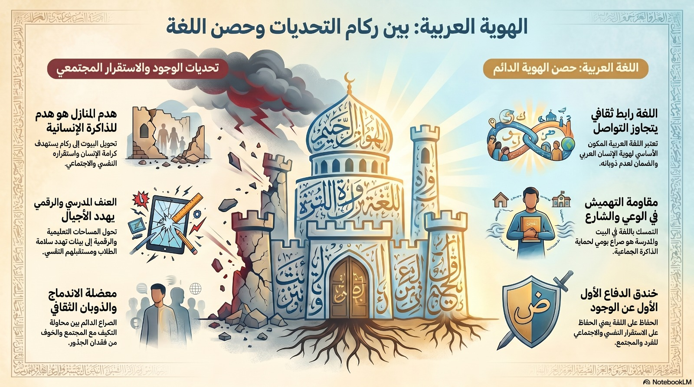

الهويّة والانتماء
تُعدّ الهوية والانتماء من الركائز الأساسية في بناء شخصية الإنسان داخل المجتمع، وهما محوران مركزيّان في دراسة المدنيات. فالهوية تعبّر عن الخصائص التي تميّز الفرد، مثل لغته وثقافته وقيمه، بينما يشير الانتماء إلى شعوره بالارتباط بمجتمعه ووطنه، واستعداده للمساهمة فيه بصورة فاعلة ومسؤولة.
في واقعنا اليومي، تبرز قضية اللغة كأحد أبرز مكونات الهوية. فدمج اللغات ليس مجرد ظاهرة لغوية عابرة، بل هو معادلة حسّاسة بين الاندماج في المجتمع من جهة، والحفاظ على الجذور الثقافية من جهة أخرى، دون الذوبان وفقدان الهوية.
تتجسّد هذه الإشكالية في صورة زقاقٍ تملؤه لافتات بلغتين، تقف فيه اللغة العربية وكأنها في مفترق طرق: بين جيلٍ يسعى لإثبات حضوره وهويته، وواقعٍ يوميّ يفرض عليه التكيّف من خلال التبديل والخلط في الكلام. فالمسألة لا تقتصر على استخدام كلمات من لغة أخرى، بل تمتد إلى خشية حقيقية من تراجع حضور اللغة الأم في الوعي، وفي البيت، والمدرسة، والشارع.
من هنا تنبع التساؤلات: كيف يمكن للفرد العربي أن يحافظ على لغته كجزء أصيل من هويته وانتمائه، وهو يعيش في بيئة متعددة الثقافات تتطلب منه الانفتاح والتأقلم؟
نرى أن الحل يكمن في بناء جسور الحوار والتفاهم، من خلال تعزيز التواصل بين العرب واليهود داخل المجتمع عبر مبادرات مشتركة، تسهم في تقليل التوتر، وترسيخ الاحترام المتبادل. فالحفاظ على الهوية لا يتعارض مع الانفتاح، بل يتكامل معه عندما يقوم على وعيٍ وثقةٍ بالذات.
